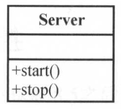
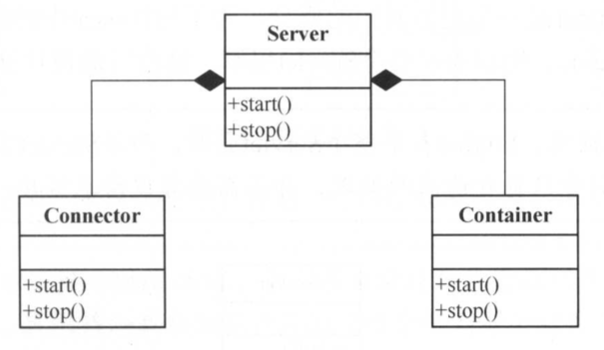
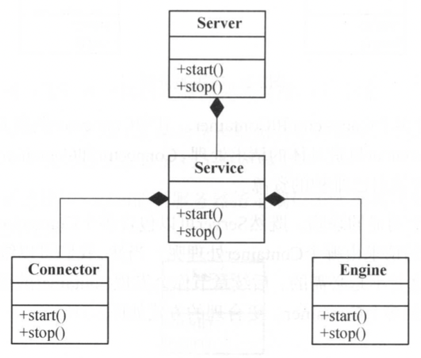
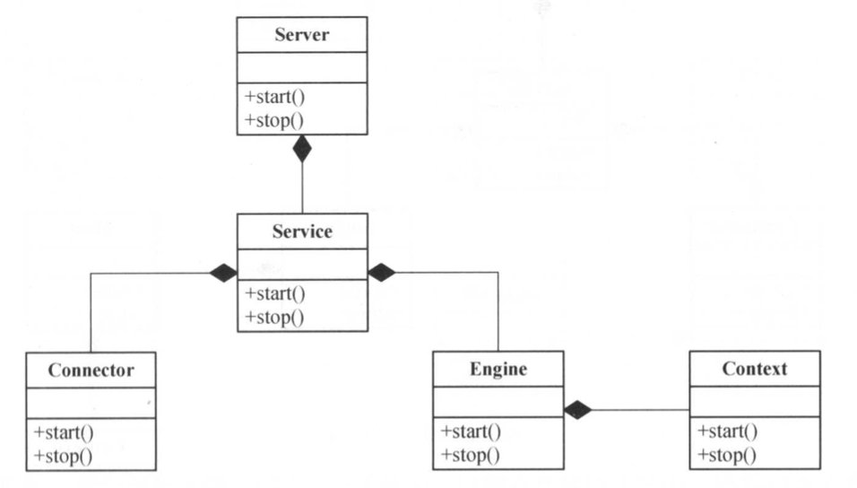

Tomcat架构-2
1、Tomcat的总体设计
Tomcat是一款应用服务器，从最基本的功能来讲，服务器可以被描述为这样一个应用（软件）：
它接收其他计算机(客户端)发来的请求数据并进行解析，完成相关业务处理，然后把处理结果作为响应返回给请求计算机(客户端)。
1.1 、服务器v1.0版本
通常情况下，我们通过使用Socket监听服务器指定端口来实现功能。按照该描述，一个最简单的服务器1.0设计如下图所示

我们通过start()方法启动服务器，打开Socket链接，监听服务器端口，并负责在接受到客户端请求时进行处理并返回响应。同时提供一个stop()方法来停止服务器并释放网络资源。
1.2 、服务器v1.1版本
使用服务器1.0版本后，突然有一天，我们业务需求，要使用Apache搭建服务器集群，我们的web应用在独立部署时需要使用http协议为客户端提供服务；当通过Apache进行集群部署时，我们使用AJP协议与Apache进行链接，服务器在两种模式下切换时，我们原来的web应用不需要做任何修改。
那么我们如何解决这个问题呢，最自然的想法就是将网络协议与请求处理进行分离。于是有了我们的服务器1.1版本，我们做了如下图所示的改动：

一个Server可以包含多个Connector和Container。其中Connector负责开启Socket并监听客户端的请求、返回响应数据；Container负责具体的请求处理。Connector和Container分别拥有自己的start()和stop()方法来加载和释放自己维护的资源。
为了使服务器的结构更加清晰，和更加符合Tomcat的命名，我们又做了如下的抽象和重命名

一个Server包含多个Service（它们互相独立，只是共享一个JVM以及系统类库），然后每个Service负责维护多个Connector和一个Engine，Engine由先前的Container重命名而来。
1.3 、服务器v2.0版本
前面1.x版本已经解决了网络协议和容器的解耦，但是我们的服务器是用来部署并运行Web应用的，是一个运行环境，因此我们需要在Engine容器中支持管理Web应用，当接受到Connector的处理请求时，Engine容器能够找到一个合适的Web应用来处理业务逻辑。
于是我们对对服务器做了如下更新。

我们使用Context表示我们的Web应用，Engine里面应该包含多个Context。现在这种设计感觉已经很合理了，但是真的合理吗，设想一下，如果我们的主机有多个二级域名要处理，例如，news.myweb.com、video.myweb.com…等，现在这种服务器设计自然无法支持。